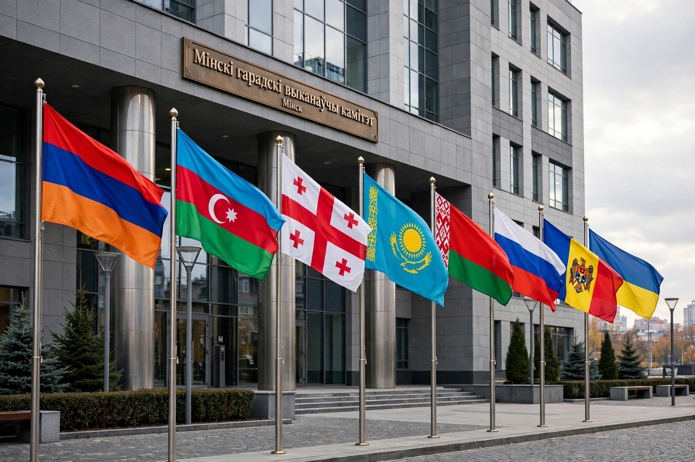

Commonwealth of Independent States
From Wikipedia, the free encyclopedia
| Commonwealth of Independent States (CIS) | |
|---|---|
 | |
| Formation | 8 December 1991 (Belovezha Accords); 21 December 1991 (Alma-Ata Protocols) |
| Headquarters | Minsk, Belarus |
| Membership | 9 member states (incl. Russia, Belarus, Kazakhstan, Armenia, Azerbaijan, Kyrgyzstan, Tajikistan, Uzbekistan; Moldova's participation suspended) |
| Working language | Russian |
| Executive Secretary | Sergey Lebedev (since 2007) |
The Commonwealth of Independent States (CIS) is a regional intergovernmental organisation in Eurasia, formed following the dissolution of the Soviet Union in 1991. It was founded by Russia, Belarus and Ukraine through the Belovezha Accords of 8 December 1991, which declared the USSR dissolved; the Alma-Ata Protocols two weeks later brought in most of the remaining Soviet republics.
Membership and withdrawals
The Baltic states never joined. Georgia joined in 1993 but withdrew after the 2008 Russo-Georgian War. Ukraine, a founding participant that never ratified the CIS charter, progressively withdrew after Russia's 2014 annexation of Crimea and fully after the 2022 invasion. Moldova began suspending participation in CIS bodies after 2022. Turkmenistan has been an "associate member" since 2005.
Functions and related bodies
The CIS was intended to manage a "civilised divorce": coordinating on trade, security, borders and the division of Soviet assets and debts. Its councils of heads of state and government meet regularly, and it maintains an Economic Court, an Interparliamentary Assembly and a free-trade area (established 2011). In practice much substantive integration has shifted to overlapping organisations — the Eurasian Economic Union, the Collective Security Treaty Organization (CSTO) and the Russia–Belarus Union State — leaving the CIS a loose consultative forum. Its combined population is roughly 240 million across the world's largest land area of any regional bloc.
Criticism
Analysts often describe the CIS as a mechanism for preserving Russian influence in the post-Soviet space rather than a genuine integration project; several members have distanced themselves further since 2022. Compare with the post-1989 transitions that also produced crises such as the Cold War's earlier confrontations' legacies.